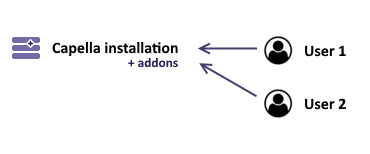
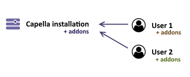
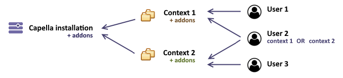
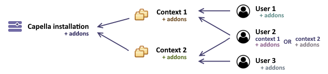
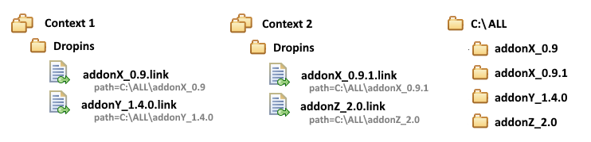
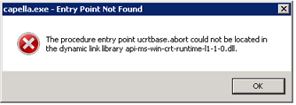

For a successful installation of Capella, your computer must meet the following recommended requirements:
Note: If you intend to install a previous Capella release, follow installation instructions below but please consult the Previous releases installation as there are some slight differences on previous Capella releases
Starting from Capella 6.0, a JDK Temurin (from adoptium.net) is directly embedded in the product. Having an additional Java environment on your machine is no longer a requirement.
Note: This distribution is a production-ready open-source build without legal requirement to subscribe to a commercial support contract and distributed under GNU General Public License, version 2, with the Classpath Exception.
Note: Notice that only the embedded JDK has been field-tested.
If however you want to use a different JDK version, you need to modify the capella.ini file at 3 places. The first one is to add on two lines -vm and a reference to your JDK location. The second one is to modify -Dosgi.requiredJavaVersion argument to point to your JDK version. The third one is to adapt the -Dpde.jreProfile=JavaSE-17 line either to match the version of your JDK. Please refer to the following
link for more information and
compatibility page.
Note: If you decide to use a JRE instead of the embedded JDK, please note that some capabilities will be disabled (e.g. the Java development capability in Capella or some capabilities coming from add-ons)
Before starting the installation, the target location of Capella must be cleaned:
Note: See Restrictions and Troubleshooting below. (Some installation issues can occurs. e.g. due to 'Folder Long Path limitation' or 'Missing libraries')
Since Capella hasn't been installed from Apple Store, it might not be runnable directly once downloaded and you will have to follow some additional instructions to make it runnable.
xattr -d com.apple.quarantine /Applications/Capella.app
Capella is extensible with addons that can be installed onto Capella to enrich its functionalities.
Before installing an addon, you shall think about how the Capella installation will be used. A common question is whether the installation is supposed to support several users or not. If it's the case, a possible configuration is to share the same installation of Capella with several users using independently different set of addons. Another possible configuration is to allow users to work on several contexts where they share common set of addons and configuration. To set up these configurations, several strategies are described in the Configuration strategies.
Addons are installable as "update sites" or as "dropins".
Note: A dropins, or a zipped update site offers often a more simpler deployable packaging than update sites through URL in operational projects, which can requires offline installation, requires network proxies or simply has to let administrator decide which version and when an addon has to be updated.
Note: In both cases, dropins or update sites, make sure that the addon/extension is compatible with your current version of Capella and Capella projects lifecycle. (even if update sites seem to provide some consistency for a Capella installation, a ProjectX may require a dedicated x.y.z version of addon, and administrators shall manage their own Compatibility map per projects, to prevent unexpected updates of a shared Capella installation)
Compatibility information is commonly provided by the addon provider or for open source addons, marked aside the download release information (ex: Requirement addon)
Note: After installation, please see Post-installation steps
While archives allow by definition the offline installation capability, accessing update-sites via URL may require access to the Internet. Behind a proxy you may face some issues and require specific configuration on Capella Preferences > General > Network connections.
To install an update site:
An update site can also be installed through command line.
Install a feature from an update site
capellac.exe -repository {repository} -installIU {featureName} -application org.eclipse.equinox.p2.director
(replace {xxx} by corresponding values without brackets)
{repository} is one of the following format
jar:file:/updatesite.zip!/file://unzipped-updatesite-folder/
https://update-site.url
{featureName} is the name of a feature (see below)
List all features of an update site
capellac.exe -application org.eclipse.equinox.p2.director -repository {repository} -list "Q:everything.select(x | x.properties ~= filter('(org.eclipse.equinox.p2.type.group=true)'))"
(See additional query definition for -list at Query Language)
Dropins are self-contained addons.
-clean command line parameter to ensure that installation is properly updated.Make sure that the installed addon as dropin has a valid structure.
The structure is similar to:
addonName\eclipse\plugins\*addonName\eclipse\features\*
Note: The structure of dropin is different from an update site, preventing an update site from being installed as dropin as is. (There is some additional files artifacts.jar and content.jar or the folder hierarchy is different)
The following procedure for verifying the successful installation of addons
Capella provides different strategies for supporting multi-user installs. Each strategy is deployed based on three important locations:
Single installation. This is the most basic configuration. An user can use Capella, install some addons, that will be installed in the configuration folder of the Capella installation.
Particularities
Setup
dropins folder of Capella installation or in another location by adding the -Dorg.eclipse.equinox.p2.reconciler.dropins.directory=path/to/dropins (no quotes) at the end of the capella.ini file.Multi users with a shared installation. Users will share a same installation of Capella which can be provided to them with a predefined-set of addons.
 
Setup
capella.ini file, add the argument -Dosgi.configuration.area=@user.home/xxx/capella/configuration. (each user shall have a dedicated folder)admin.ini file, having the same content than capella.ini without the previously add line -Dosgi.configuration.areaadmin.ini file by using --launcher.ini admin.ini command line parameter. capellaInstallation/(configuration|p2|plugins|features)
dropins folder of Capella installation or in another location by adding the -Dorg.eclipse.equinox.p2.reconciler.dropins.directory=path/to/folder (path without quotes) at the end of the capella.ini and admin.ini files.admin.ini and install them.
A same installation of Capella can be used for several contexts (several teams, several separated models, etc) where users share a different set of addons per context. An user can also be part of / working on several contexts.

Setup
contextX_admin.ini with an added line: -Dosgi.configuration.area=somewhere/contextX/capella/configuration. This file will be used by administrators when installing a new add-on for the contextXcontextX.ini with added lines -Dosgi.sharedConfiguration.area=somewhere/contextX/capella/configuration and -Dosgi.configuration.area=@user.home/xxx/contextX/capella/configuration. This file, used by users, is referring to the configuration of the contextX with osgi.sharedConfiguration.areacontextX_admin.ini file by using --launcher.ini contextX_admin.ini command line parameter.somewhere/contextX/capella/(configuration|p2|plugins|features)
somewhere/contextX/capella/dropins location.
contextX.ini, add also -Dorg.eclipse.equinox.p2.reconciler.dropins.directory=somewhere/contextX/capella/dropins to refer to the dropin location.capella.exe with --launcher.ini path/to/contextX.ini command line parameter. The user will be able to launch Capella with the set of addons predefined for all its working contexts.contextX_admin.ini.
Ensure that addons are properly installed before users encounter installation errors
After updating the installation of Capella or addons
-clean in command line parameter.-clean in command line argument to ensure that configurations are updated properly for each users then check Error Log messages. Do not forget to remove this -clean parameter after this test to avoid starting performance issues.-checkConfiguration to ensure that the cache is up to date with the respect to the contents of the installed bundles.One user can be part of several working contexts
When working with several contexts, it is important to avoid mixing configuration between contexts for both -Dosgi.sharedConfiguration.area and -Dosgi.configuration.area. Both path must contain a contextX information. Afterwards, if a user is part of a new contextY, administrator will just have to provide a new launcher with --launcher.ini contextY.ini. The configuration will be located in a dedicated contextY folder and will not be mixed up with previous contexts.
Parent folder of configuration shall be dedicated to Capella
-Dosgi.configuration.area or -Dosgi.sharedConfiguration.area, it is important to have a parent folder dedicated to capella. (@user.home/capella-configuration is a bad choice as @user.home will be polluted with other folders, whereas setting up -Dosgi.configuration.area=somewhere/capella/configuration is recommended, as addons will be installed in somewhere/capella/(configuration|p2|plugins|features).Users can install its own addons
It is important to keep in mind that with all the described configurations above, an user can install its own addons in its configuration area. This can be useful, but sometimes not an expected installation. This can't be prevented by setting up the configuration, but administrators can setup read-only permissions to some predefined folders such as @user.home/xxx/capella/(p2|plugins|features|dropins).

Dropins can be installed once and reused across installations/configurations
When installing a dropins, it is possible to install all the dropins in a dedicated folder containing all addons and setup a file.link, a file referencing a specific dropins folder through a path=path/to/dropin/folder line.
For instance, it is possible to have several Capella installation or several contexts referencing dropins installed in another location.

For older Capella releases, Capella will require a Java Runtime Environment 64 bits 1.8 installed on the computer: the recommended version is jre-8u121-windows-X64.exe or later.
Some changes since then:
- Execution and configuration files are called eclipse.exe (resp. eclipse.ini) rather than capella.exe (resp. capella.ini)
- In case Capella does not start, edit the eclipse.ini file and add two new lines before -vmargs:
-vm<ABSOLUTE_PATH_TO_JAVA.EXE> (JRE/JDK 32 or 64-bits according to the version of Capella)You can configure Capella to embed additional sample models.
Sample models are located aside the Capella installation folder, in a sample folder. If you package some additional samples here, they will be available to your users using Import > Capella Example > Capella Project Example.
If upgrading from a previous version, please read the model migration guide, as your older models may not be compatible right away with this new version.
Please refer to the Addon User Guide, there is maybe an additional How to install guide or some post installation steps in it.
Capella is based on Eclipse: folder hierarchy and namespace of Capella and Eclipse plugins are quite long. Because of Windows folder path restriction, avoid entering a long installation location.
In case the path is too long, some files can not be opened by Capella and this will cause errors (for instance Description editor may not work). Since the extraction will raise an error you should delete the partially extracted files and re-extract it.
Note: To avoid unexpected errors, path of the Capella directory to the capella folder is limited to
115 characters (<CAPELLA_INSTALLATION_DIR>/capella). (a "space" character is counted like three characters (%20)''').
If launching Capella in Windows OS ends up with the following pop-up, it means that your OS misses some libraries to be compatible with JDK 14.

The solution is to install this Microsoft's update according to your OS version: https://support.microsoft.com/en-us/help/2999226/update-for-universal-c-runtime-in-windows
Sometimes due to security policy, the web browser has problem on opening local host web pages. This is the case of the Help Content page when it is accessed via the 127.0.0.1 IP address.
Here are 2 possible workarounds to overcome this problem:
127.0.0.1 by localhost.When uninstalling an addon in a multi users configuration, please read Recommendations for setting up multi-users configurations and ensure that all your users have been properly updated after uninstallation.
Notice that you can uninstall a viewpoint on a Capella installation, but your models may still reference it and will require it to be opened.
If your model no longer need this part of modeling capability, you can consider to 'unreference' the viewpoint from your model.
See Kitalpha - Architecture Framework Technology Guide > Viewpoint Technology > User's Guide > Viewpoint Manager (online documentation)
To uninstall an update site:
A dropins can be uninstalled by deleting it from the folder dropins
To uninstall Capella, just delete it from your system.
If your installation is used by several users, it is recommended to delete all folders defined in Configuration strategies to ensure that configurations are properly cleaned if you upgrade Capella.
somewhere/contextX/capella or @user.home/xxx/capella/configuration